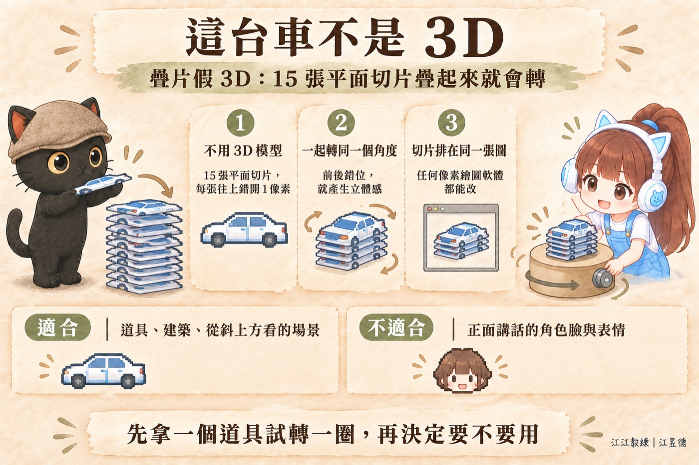
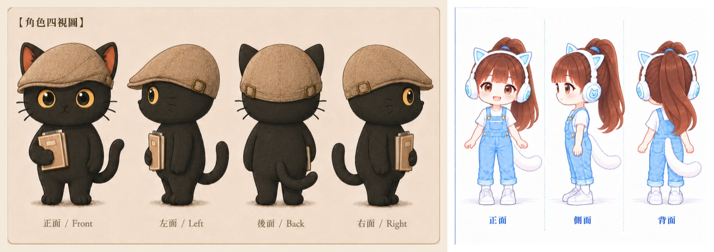

AI 生圖要放兩個固定角色時，很多人會把兩個角色的設定圖各丟一張當參考圖。我把咪卡和朵拉的角色設定圖（也叫定裝照、三視圖）左右拼成一張，生圖時只帶這一張加一張畫風樣板。同一張圖、同一個模型、同樣的畫質，生圖時間從 54 秒變成 12 秒。
拼的時候用裁切和並排，不請 AI 重畫，所以兩個角色的長相跟原本的定裝照一模一樣，拼圖本身也不花生圖費。這篇講怎麼拼、實測差多少，以及拼完之後要守的兩件事。
- 圖卡、海報裡固定會出現兩個以上的角色，每次都要丟好幾張參考圖
- 用 API（用程式直接呼叫 AI 模型，不開網頁）生圖，覺得帶了參考圖之後等很久
- 幫客戶或品牌做角色圖卡，要讓每一張的長相都對得上定裝照
- 一段提示詞：請 AI 把多張三視圖拼成一張參考圖
- 一張實測表：拼之前跟拼之後的時間、token、估計費用
- 拼完之後要守的兩件事：誰是正本、參考圖的順序
圖卡裡固定有兩個角色，每次都要丟好幾張參考圖
我的社群圖卡現在固定讓咪卡和朵拉一起出現。咪卡有一張四視圖定裝照（比三視圖多一個角度），朵拉有一張 Q 版三視圖設定表，下面統稱三視圖。再加上一張畫風樣板，讓每張圖卡看起來是同一個系列。
所以每生一張圖，就要帶三張參考圖給 AI。我那天看著 AI 在準備參考圖，就問它：
我當時問 AI你現在要咪卡、朵拉，是不是你都要丟兩張圖給參考？所以你直接合成一張咪卡朵拉好嗎？把他們的三視圖直接整合成一張，可以嗎？左邊咪卡，右邊朵拉，一張圖有兩個角色，這樣。
這裡說的三視圖，是同一個角色的正面、側面、背面畫在同一張圖上，讓 AI 知道這個角色從各個角度長什麼樣。定裝照怎麼做，另一篇有寫。
實測：參考圖拼成一張，生圖從 54 秒變 12 秒
我用同一張一頁總結圖來比：同一段提示詞、同一個模型（OpenAI 的 gpt-image-2.6-flare）、同樣是中等畫質，只換參考圖的帶法。
| 帶法 | 參考圖 | 輸入 token | 輸出 token | 花多久 | 估計費用 |
|---|---|---|---|---|---|
| 不帶參考圖 | 0 張 | 409 | 1,132 | 11 秒 | 約台幣 1.2 元 |
| 分開帶 | 3 張：咪卡定裝照、朵拉設定表（1.9MB）、畫風樣板 | 5,282 | 1,132 | 54 秒 | 約台幣 2.4 元 |
| 拼成一張 | 2 張：合成參考圖（227KB）、畫風樣板 | 3,528 | 1,132 | 12 秒 | 約台幣 2.0 元 |
token 是 AI 計費的單位，可以想成 AI 讀進去和吐出來的字數。上表的 token 數是 API 回傳的，時間是我實際計時的。
- 時間少了 78%：54 秒變 12 秒，跟不帶參考圖的 11 秒差不多。
- 輸入 token 少了 33%：5,282 變 3,528。
- 錢省得不多：一張大約省台幣 0.4 元。主要省的是時間。
這裡每種帶法只測了一次。時間變短，除了少一張圖，合成圖的檔案也小很多（朵拉設定表一張 1.9MB，合成圖 227KB），兩個因素我沒有分開測；換模型、換尺寸、換時段，差距也可能不一樣。想看一張圖的 token 帳單怎麼算，另一篇有攤開來算。

- gpt-image-2.5 生一張圖多少錢？｜我實測十幾張，把 token 帳單攤開算工作坊材料費 這段只比有沒有拼，那篇把不同畫質、帶不帶參考圖的價錢都算過一輪
怎麼拼：裁切並排，不請 AI 重畫
拼的方法很單純：把兩張定裝照多餘的留白裁掉，縮到一樣高，左右並排存成一張。我是請 AI 在電腦上用 ffmpeg 這個免費的影像處理工具做的，幾秒就好。用網頁版 AI 的話，把兩張定裝照上傳給它；自己用任何修圖軟體左右排好存成一張，也是一樣的東西。

每張定裝照只留角色那一塊，四周空白和標題字裁掉。
兩張縮成同樣高度，各留一點邊，角色才不會黏在一起。
左邊放咪卡、右邊放朵拉，存成一張 JPG。
為什麼不請 AI 重畫一張兩個角色的合照？重畫會讓長相跑掉，等於又多了一個要比對的版本。裁切並排出來的角色，每一筆都跟原本的定裝照一樣，也不用花生圖的錢。
拼完之後要守的兩件事：定裝照是正本，參考圖順序固定
一｜定裝照是正本，合成圖是副本
合成圖是從定裝照拼出來的。哪一個角色的定裝照改版了，合成圖就要重拼一次。圖生出來之後，我還是拿原本的定裝照比對長相，不拿合成圖比。
二｜參考圖的順序固定，提示詞寫明誰在左、誰在右
我固定第 1 張放合成參考圖、第 2 張放畫風樣板。提示詞裡寫清楚「第 1 張參考圖左邊是咪卡、右邊是朵拉；第 2 張只參考畫風」，AI 才不會把畫風樣板裡的東西當成角色。
角色和畫風分開放，是因為我有時候會換其他畫風或場景。換的時候只要換第 2 張，角色合成圖照用；如果三樣拼成一張，每換一次畫風就要重拼一次。
- AI 每次生的角色都不一樣，用定裝照解決｜角色三視圖 這篇的前提是每個角色已經有定裝照；還沒有的話，先看那篇怎麼生出來
- AI 助理換個平台，能力就不一樣：我為什麼把它拆成兩個角色 想知道為什麼要分成好幾個角色、各自管什麼，看這篇
請 AI 幫你拼參考圖的提示詞
這段可以直接複製，角色名字和檔名換成你自己的：
生圖的時候，提示詞可以這樣寫參考圖的分工：
重點整理：兩張角色設定圖拼成一張，生圖從 54 秒變 12 秒，長相也不跑
- 圖卡固定有兩個角色時，把兩張角色設定圖左右拼成一張參考圖
- 用裁切並排，不請 AI 重畫，長相跟定裝照一樣，也不花生圖費
- 實測同一張圖各一次：54 秒變 12 秒，輸入 token 少 33%，錢一張約省台幣 0.4 元
- 定裝照是正本，改版就重拼；生完拿定裝照比對
- 參考圖順序固定，提示詞寫明誰在左、誰在右
這篇提到過的
- AI 每次生的角色都不一樣，用定裝照解決｜角色三視圖 角色還沒有定裝照，先看這篇
- gpt-image-2.5 生一張圖多少錢？｜我實測十幾張，把 token 帳單攤開算工作坊材料費 想自己算生圖成本，看這篇
- AI 助理換個平台，能力就不一樣：我為什麼把它拆成兩個角色 角色怎麼分工，看這篇
給你的 AI 讀的技術備忘（人可以跳過）
- 實測日期 2026 年 11 月 23 日。模型
gpt-image-2.6-flare，quality: medium，尺寸 1536x1024。 - 有參考圖時走 OpenAI
/v1/images/edits，multipart 上傳，欄位image[]可重複；第 1 張放合成參考圖、第 2 張放畫風樣板。 - 合成參考圖做法：ffmpeg 各自
crop掉留白，scale到同高（例：640）、pad各留 20 像素邊，再hstack左右並排，輸出 JPG。不要用生圖模型重畫。 - API 只有 1024x1024、1024x1536、1536x1024 三種尺寸；1536x1024 是 3:2，要 16:9 從中間裁成 1536x864，要 4:5 從 1024x1536 裁成 1024x1280，構圖上下要留安全邊。
- API 金鑰存在系統的密碼保險櫃（macOS 鑰匙圈），程式執行時讀取，不貼進對話。